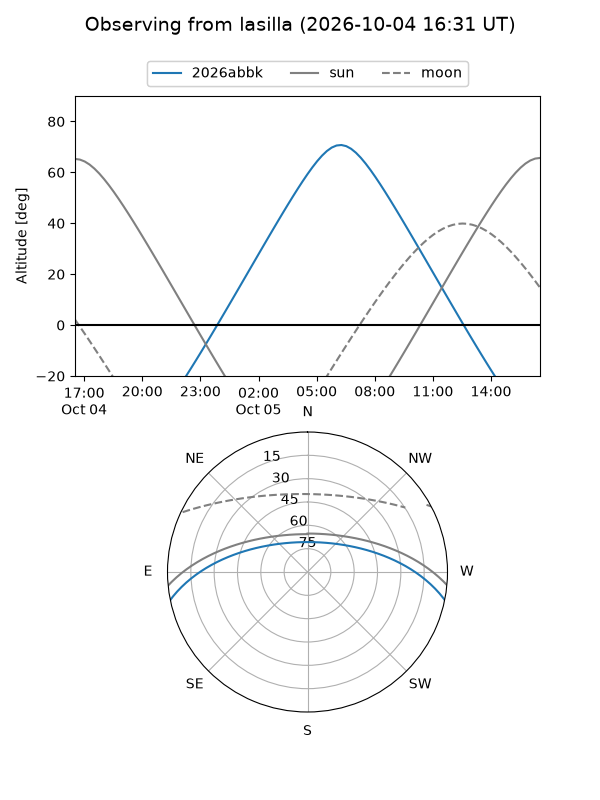
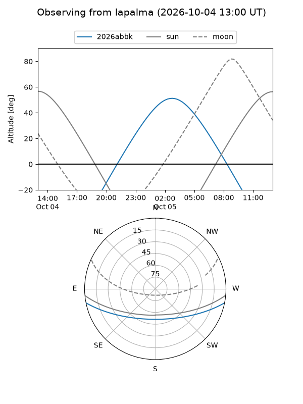
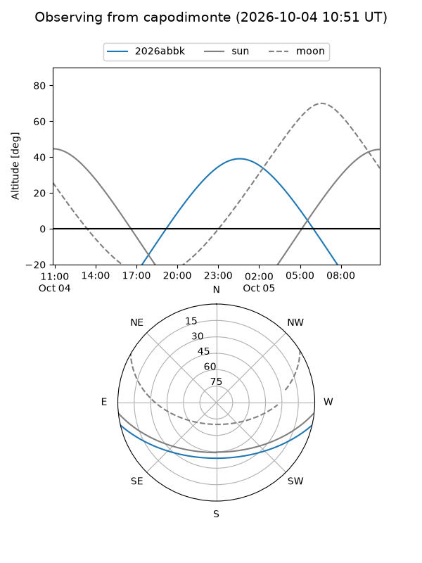
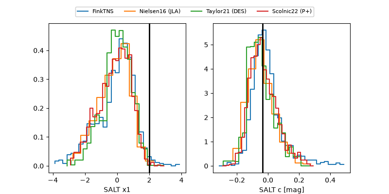

2026abbk
Target 2026abbk at 2026-10-05 01:23
Aliases and brokers:
FINK-ZTF: ztf.fink-portal.org/ZTF26absrueb
Lasair-ZTF: lasair-ztf.lsst.ac.uk/objects/ZTF26absrueb
ALeRCE-ZTF: alerce.online/object/ZTF26absrueb
YSE-PZ: ziggy.ucolick.org/yse/transient_detail/2026abbk
TNS name: wis-tns.org/object/2026abbk
Direct TNS query: direct search
alt names
ZTF26absrueb (ztf,fink_ztf)
2026abbk (tns,yse)
ATLAS26lqn (atlas)
PS26hsn (panstarrs)
Coordinates:
equatorial (ra, dec) = 36.3093,-10.13925
equatorial (HMS+DMS) = 02:25:14.22,-10:08:21.31
galactic (l, b) = (179.8575,-62.12921)
Flags:
TNS type: nan
peak dt: +15.0
Photometry:
last ztfg=19.67, ztfr=20.22
6 ztfg, 5 ztfr detections
Lightcurve
Visibility



Additional plots
